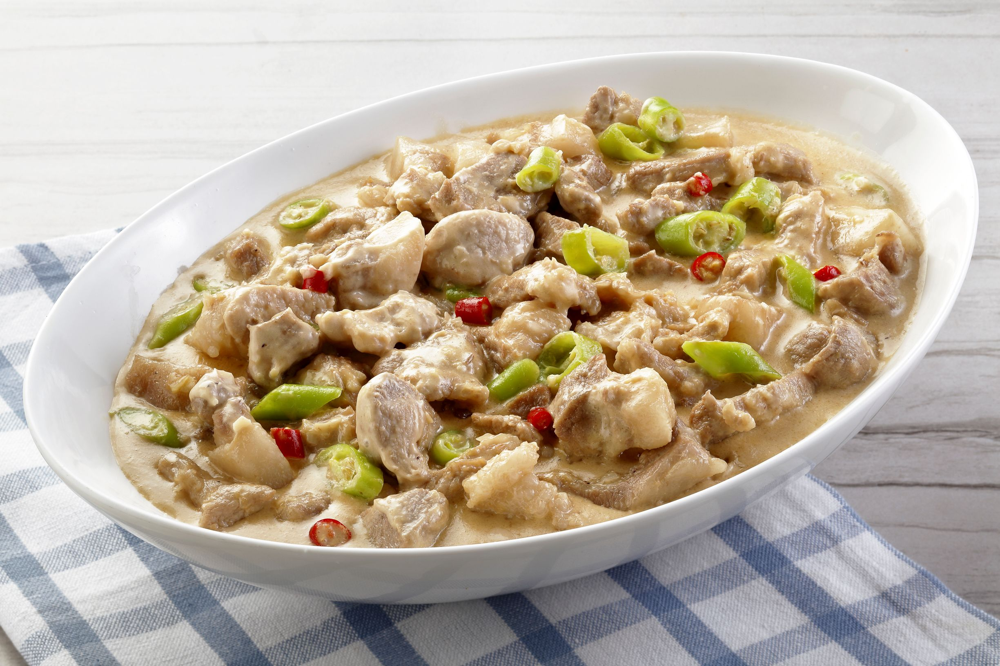

Bicol Expresss

Ingredients:
- Pork: 2 pounds pork belly, cut into strips.
- Coconut Products: 2 cups coconut milk, 1 cup coconut cream, 1 cup water.
- Aromatics: 1 small onion, peeled and chopped; 6 cloves garlic, peeled and minced.
- Flavor Enhancers: 2 tablespoons shrimp paste.
- Chilies: 12 to 14 Thai chili peppers, stemmed and minced.
- Cooking Fat: 1 tablespoon oil.
- Seasoning: Salt and pepper to taste.
Instructions:
- 1. Sauté Aromatics and Shrimp Paste: In a wide pot over medium heat, warm the oil. Add the chopped onions and minced garlic, cooking until they become fragrant. Incorporate the shrimp paste and continue to cook, stirring occasionally, for about 5 minutes or until it starts to brown.
- Brown the Pork: Add the pork strips to the pot and cook, stirring regularly, until they are lightly browned.
- Simmer with Coconut Milk: Pour in the coconut milk and water, then bring the mixture to a simmer. Allow it to cook for approximately 10 minutes, or until the liquid has reduced.
- Add Coconut Cream and Chilies: Stir in the coconut cream and the minced Thai chili peppers.
- Tenderize and Thicken: Continue to cook the dish until the pork is tender and the sauce begins to render its fat, indicating it has thickened.
- Season and Serve: Season with salt and pepper according to your taste preferences. Serve the Bicol Express hot, ideally with steamed rice.